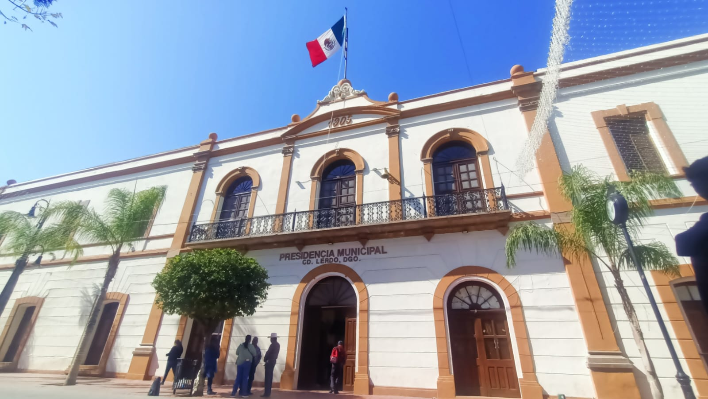
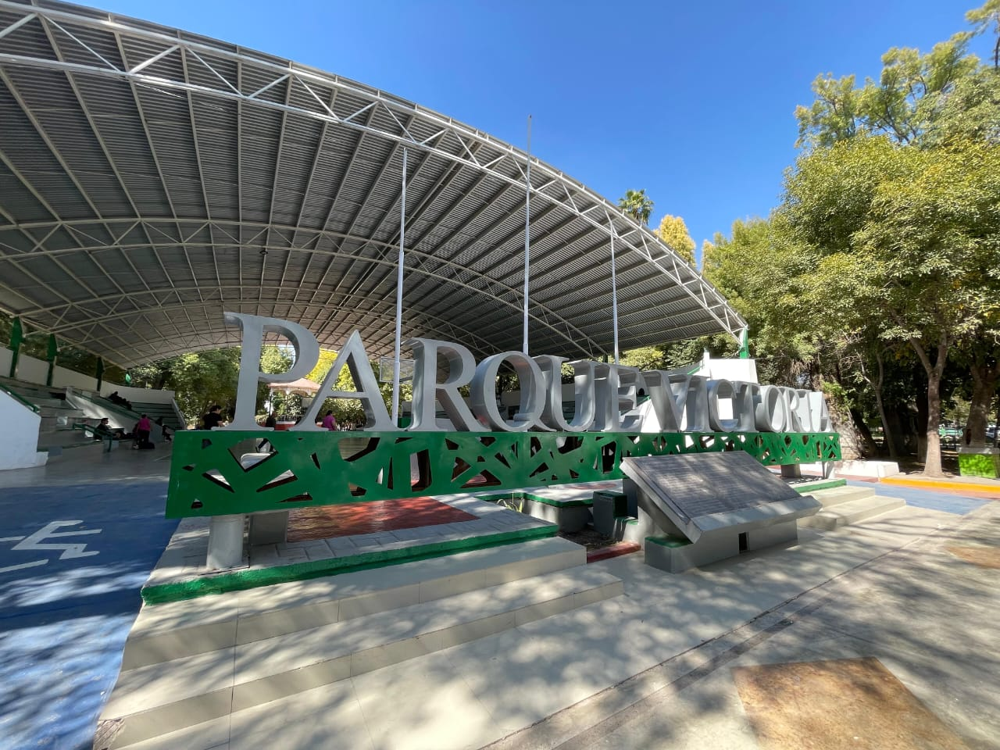
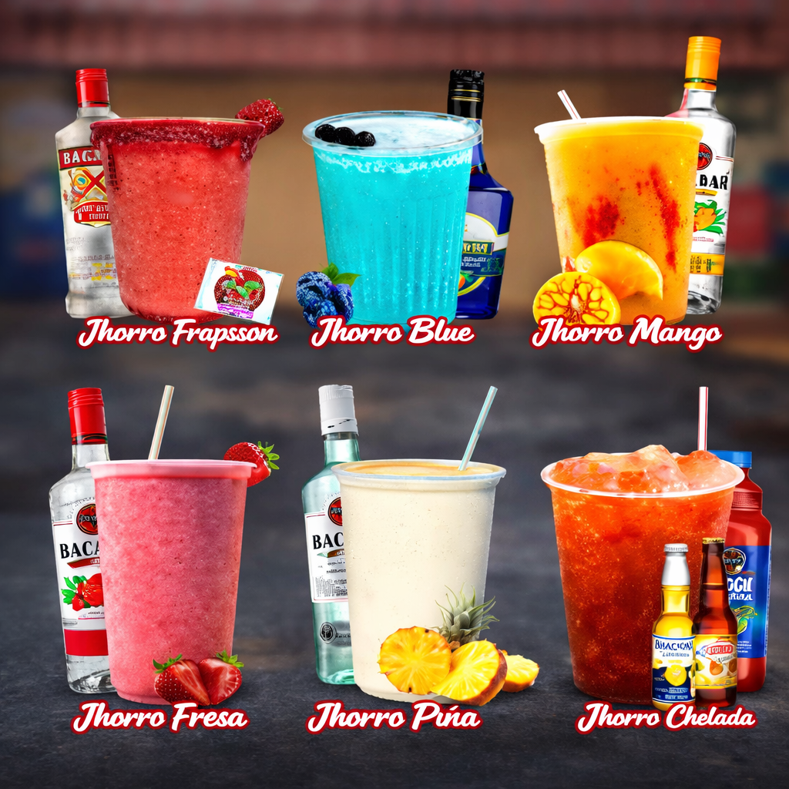

Lerdo, Durango, es una ciudad llena de tradición ubicada en la Comarca Lagunera. Su crecimiento agrícola, cultural y social la convierte en un destino atractivo para visitantes que buscan tranquilidad, naturaleza y cultura norteña.

Lerdo cuenta con múltiples atractivos turísticos ideales para disfrutar en familia o con amigos. Entre los más destacados se encuentran el Parque Nacional Raymundo, áreas naturales del Río Nazas y diversos espacios recreativos donde la naturaleza y la convivencia se combinan perfectamente.
Además, cafeterías locales, plazas públicas y eventos culturales permiten conocer la esencia auténtica de la ciudad.

La gastronomía lagunera destaca por sus sabores intensos y tradicionales. Platillos como las gorditas, carnes asadas, antojitos mexicanos y postres regionales forman parte esencial de la experiencia culinaria en Lerdo.
Eventos locales, ferias y celebraciones que mantienen vivas las tradiciones laguneras.
Espacios naturales ideales para relajarse y convivir al aire libre.
La hospitalidad de su gente hace de Lerdo un lugar especial para visitar.
Haz clic en el mapa para agregar lugares turísticos